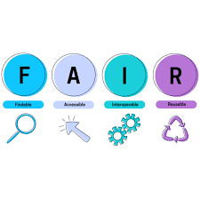

FAIR Principles
Transparency, collaboration, accelerated research, and better decision-making are all facilitated by data sharing, which advances science.
What is this about?
The FAIR principles describe the ideal way data should be stored and shared to maximise its usefulness and allow the whole research community to benefit from it. FAIR stands for “Findable, Accessible, Interoperable and Re-usable”. The main goal of the FAIR principles is to enable the "‘long term care' of valuable digital assets", in order to allow them to be reused for future research. The scope of these principles goes beyond the data in the conventional sense but includes all the components of the research process, including the algorithms and workflows that lead to the resulting data. This means that FAIR data management supports both human-driven and machine-driven data discovery and exploitation activities.
Why is this important?
While conducting research we (as researchers) produce different kind of data: we write research designs and workflows, we collect raw data, we analyse them, we write about them. However, most of the time the only part of our research which is publicly shared is represented by the articles which we produce as a result of the entire research cycle. In fact, all phases of research could be of potential interest for other researchers, who could reuse the data we produce in a different way. By maximizing access to and re-use of research data we can optimize the impact of the data that we produce. In line with the principles of Open Science, good data management becomes a fundamental instrument to promote and facilitate the reusability, accessibility and exploitation of research data, thereby allowing for the generation of new knowledge. Read more about the importance of FAIR principles here.
How do I make my data FAIR?
Findable:
The first step in (re)using data is to find them. Metadata and data should be easy to find for both humans and computers.
data are assigned a globally unique and eternally persistent identifier.Data are described with rich metadata.
Data are registered or indexed in a searchable resource.
Accessible:
Once the user finds the required data, they need to know how they can be accessed, possibly including authentication and authorisation.
(Meta)data are retrievable by their identifier using a standardised communications protocol Metadata are accessible, even when the data are no longer available.Interoperable:
The data usually need to be integrated with other data. In addition, the data need to interoperate with applications or workflows for analysis, storage, and processing.
(Meta)data use a formal, accessible, shared, and broadly applicable language for knowledge representation.(Meta)data use vocabularies that follow FAIR principles.
(Meta)data include qualified references to other (meta)data
Reusable:
The ultimate goal of FAIR is to optimise the reuse of data. To achieve this, metadata and data should be well-described so that they can be replicated and/or combined in different settings.
(Meta)data are richly described with a plurality of accurate and relevant attributes(Meta)data use vocabularies that follow FAIR principles.
(Meta)data include qualified references to other (meta)data
Wanna learn more?? click here